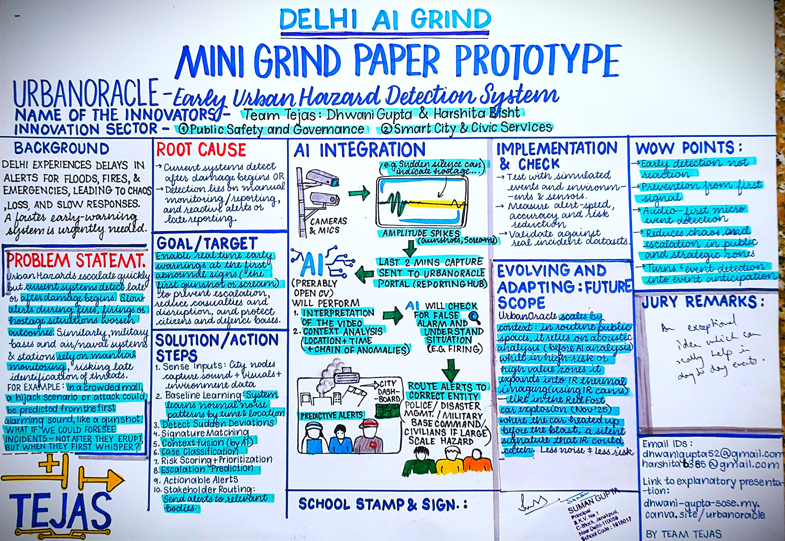

UrbanOracle monitors real-time environments using continuous audio and video feeds from cameras and microphones installed across sensitive and public zones. The system detects sudden anomalies such as unusual silence, sharp amplitude spikes, abnormal crowd movement, or heat signature rise. These triggers automatically save the last two minutes of footage and forward it to the UrbanOracle AI portal. At the very top of this page, the AI Analysis demonstration shows how the system interprets video frames and sound waves to classify threats, calculate prediction confidence, and recommend which emergency teams should respond. By combining amplitude analysis (loudness), frequency analysis (pitch), motion patterns, and thermal indicators, UrbanOracle differentiates between false alarms and real threats — enabling faster, smarter emergency response.
Before developing the digital prototype, the complete system flow, interface layout, and detection logic of UrbanOracle were first designed on paper. This helped visualize how the AI, reporting system, and emergency response integration would work together.
| Incident Type | Impact |
|---|---|
| Medical emergencies | ~35% worse outcomes |
| Fire incidents | ~45% higher damage |
| Public violence / attacks | ~30% escalation |
| Kidnapping / missing cases | ~40% drop in recovery success |
| Infrastructure failures | ~25% higher losses |
| Metric | Data |
|---|---|
| Avg ambulance response (2025) | ~17.4 minutes |
| Police response | ~8–18 minutes |
| Helpline 112 outage delay | Up to ~30 minutes |
| Daily deaths due to delayed care | ~24,000 |
A massive blaze at an apartment in Dwarka Sector 10 broke out on the 10th floor, leading to 3 fatalities. It was noted that the police, and the concerned authorities received the report 30 minutes late, as there were no automatic systems present.
A family was brutally attacked and a youth stripped in public after a dispute over a basement gym. Despite multiple emergency PCR calls during the hour-long assault, police response was severely delayed, leaving victims helpless against the mob. The failure prompted a high-level probe into why the local station did not act until the mother physically arrived to plead for help.
Fire erupted on the 11th floor of Gopaldas Bhawan due to a short circuit in a ventilation shaft. While the Delhi Fire Service responded quickly, reporting was delayed because the smoke detectors failed to trigger due to poor maintenance. The fire spread rapidly through the shaft, highlighting a critical failure in automated building safety protocols for older high-rise structures.